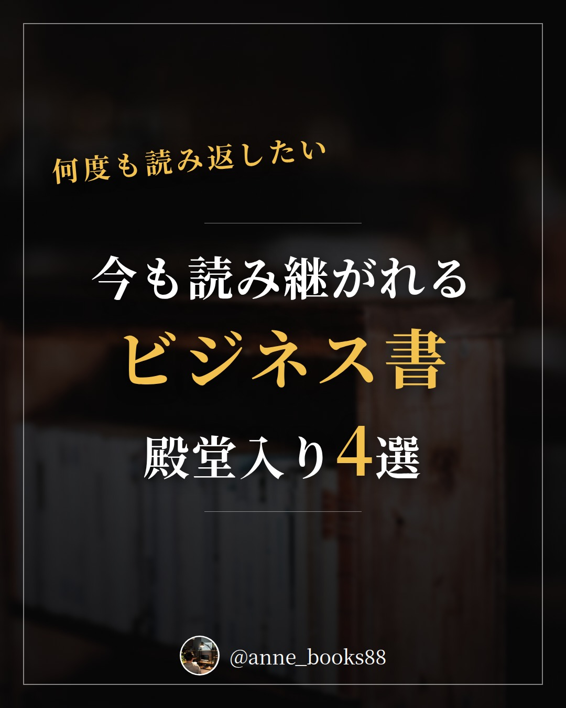
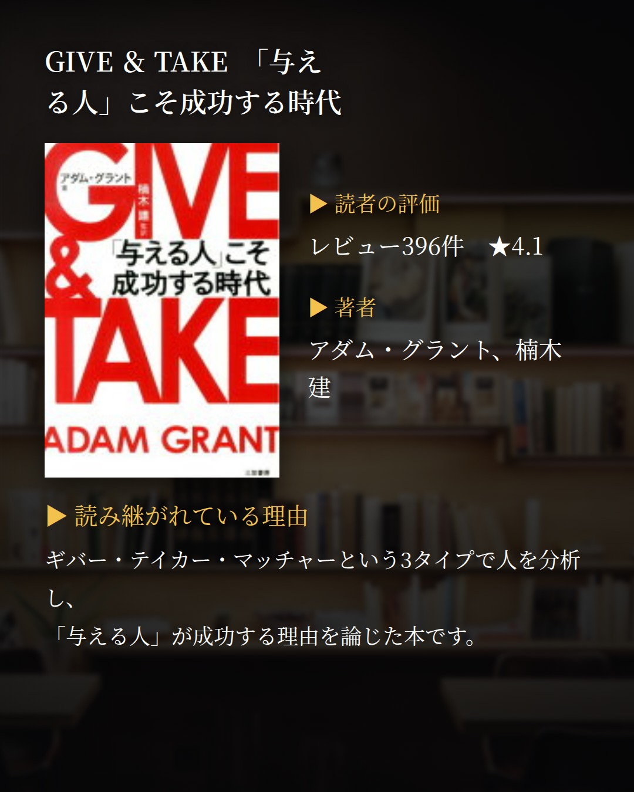
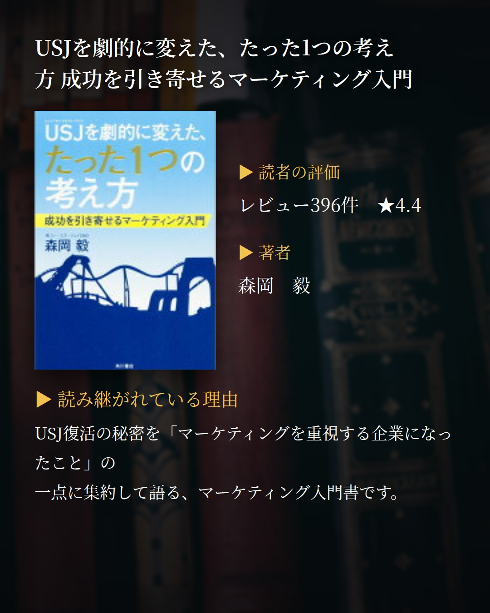
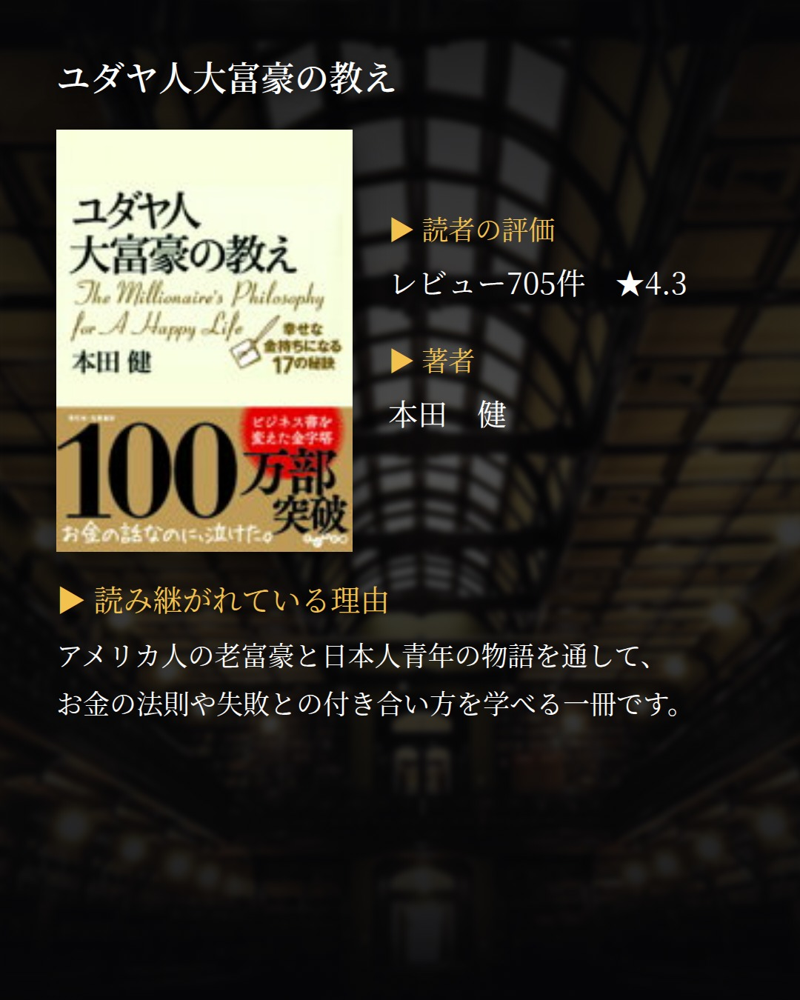
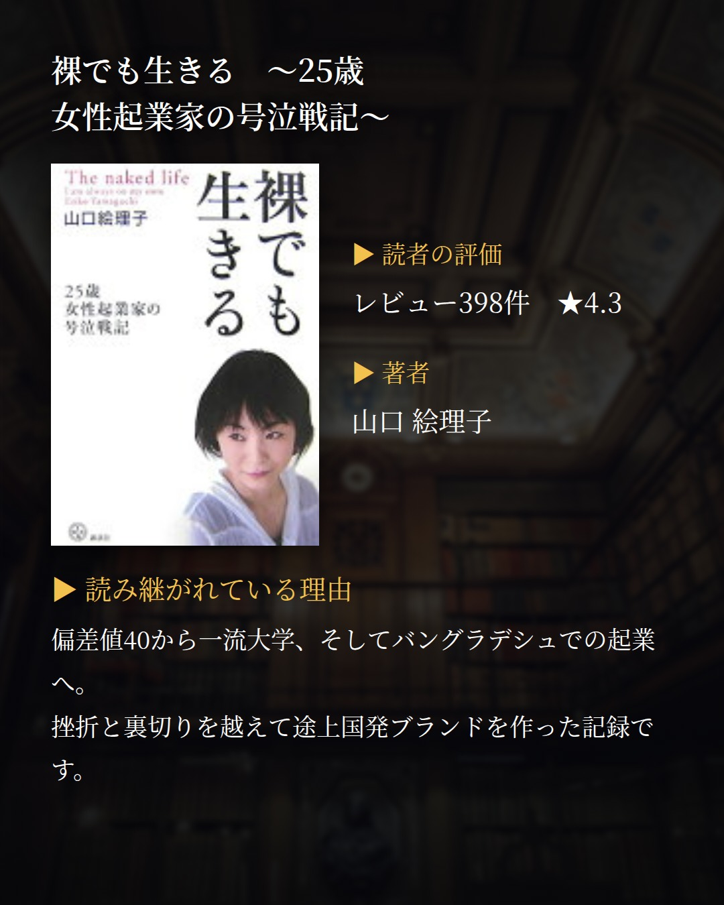
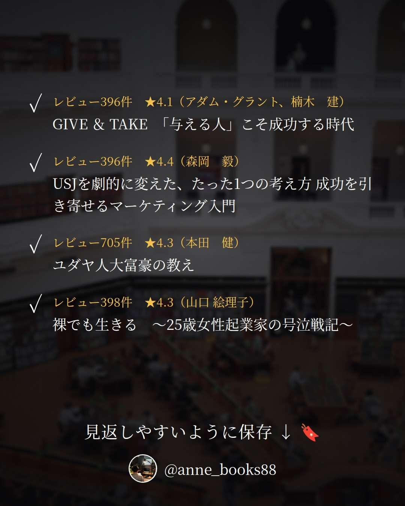

投稿プレビュー 2026-W40
内容を確認して、問題なければ Pull Request をマージしてください。 マージされた日付だけが自動投稿されます。修正する場合は drafts/ 以下の JSON を直接編集してください。
10/01 (Thu)
26年10月前半
殿堂入り書評






カードの文言
- 1 表紙: 何度も読み返したい / 今も読み継がれるビジネス書殿堂入り4選
- 2 GIVE ＆ TAKE 「与える人」こそ成功する時代（レビュー396件 ★4.1 / アダム・グラント、楠木 建） 読み継がれている理由: ギバー・テイカー・マッチャーという3タイプで人を分析し、 「与える人」が成功する理由を論じた本です。
- 3 USJを劇的に変えた、たった1つの考え方 成功を引き寄せるマーケティング入門（レビュー396件 ★4.4 / 森岡 毅） 読み継がれている理由: USJ復活の秘密を「マーケティングを重視する企業になったこと」の 一点に集約して語る、マーケティング入門書です。
- 4 ユダヤ人大富豪の教え（レビュー705件 ★4.3 / 本田 健） 読み継がれている理由: アメリカ人の老富豪と日本人青年の物語を通して、 お金の法則や失敗との付き合い方を学べる一冊です。
- 5 裸でも生きる 〜25歳女性起業家の号泣戦記〜（レビュー398件 ★4.3 / 山口 絵理子） 読み継がれている理由: 偏差値40から一流大学、そしてバングラデシュでの起業へ。 挫折と裏切りを越えて途上国発ブランドを作った記録です。
- 6 まとめ: チェックリスト
キャプション
今も読み継がれているビジネス書を4冊まとめました。特に1冊目の『GIVE ＆ TAKE 「与える人」こそ成功する時代』は、ギバー（惜しみなく与える人）、テイカー（自分の利益を優先する人）、マッチャー（損得のバランスを考える人）という3つのタイプで人を分け、これからの時代に「ギブ＆テイク」という常識が通用するのかを問い直した本だと紹介されていて気になります。アメリカで大論議を巻き起こしたという問題提起が、どんな内容なのか確かめたくなります。2冊目の『USJを劇的に変えた、たった1つの考え方』は復活の理由をマーケティングという一点に集約した本、3冊目の『ユダヤ人大富豪の教え』は物語でお金の法則を伝える本、4冊目の『裸でも生きる』は途上国発ブランドを立ち上げるまでのノンフィクションです。切り口はそれぞれ違いますが、いずれも長く読まれ、評価が積み上がってきた4冊です。
書籍固有ハッシュタグ
10/02 (Fri)
USJのジェットコースターはなぜ後ろ向きに走ったのか
森岡毅


カードの文言
- 1 表紙: お金がないなら アイデアを振り絞れ USJ V字回復の裏側
- 2 書誌情報: 2016年4月23日 / 森岡毅
- 3 おすすめ1: 限られた予算の中で 成果を出したい方
- 3 おすすめ2: 同じ条件で 違う結果を出す方法を 知りたい方
- 3 おすすめ3: アイデアが出ないと 悩んでいる方
- 4 問いかけ: お金も条件も変わらない中で どうすれば違う結果を 生み出せるのか
- 5 本文: 外部条件が同じなら 違うことをやるか 同じことを違うようにやるか
- 6 本文: 後ろ向きコースターは 予算が限られた中で 捻り出したアイデア
- 7 本文: アイデアの神様は 最も必死に考えている人の ところに降りてくる
- 8 本文: モンハンとのコラボ 絶対にやりたいという情熱が 局面突破を呼び込む
- 9 まとめ: 金がないなら知恵を出す USJ復活の軌跡を キーマンが綴った一冊
キャプション
今回は、マーケティングの現場を当事者の視点から書いた一冊です。ユニバーサル・スタジオ・ジャパンが窮地からV字回復するまでの軌跡を、キーマンである森岡毅さんが綴っています。 面白かったのは、後ろ向きに走るジェットコースターが生まれた経緯。予算が限られている中で捻り出されたアイデアで、考え抜いた先に夢の中で出会ったものだといいます。解決策はコロンブスの卵のように、聞いてしまえばすごく単純。でも、最も必死に考えている人のところにアイデアの神様は降りてくるのだと感じました。 もうひとつ印象に残ったのが、外部条件が異ならない中でより良い結果を出すには、違うことをやるか、同じことを違うようにやるか、この二つしかないという指摘。とてもシンプルですが、日々の仕事にもそのまま当てはまります。 モンスターハンターとのコラボの話も同じで、絶対にやりたいという情熱が、予測もできない局面突破を呼び込む。熱量そのものが戦略の一部になっているのが印象的でした。 日本人女性はアメリカ人女性の約二倍の頻度でテーマパークに行く、というデータも出てきます。家事や育児の疲れが先進国の中でも女性に寄っている分、非日常を求めるきらいがあるのかもしれません。 お金がないと嘆く前に、まだ考え抜けていないことがあるかもしれない。そんなことを思わせてくれる本でした。
書籍固有ハッシュタグ
10/03 (Sat)
ティム・クック
リーアンダー・ケイニー（堤沙織訳）


カードの文言
- 1 表紙: ジョブズとは違う 現場主義の経営者 ティム・クック
- 2 書誌情報: 2019年9月 / リーアンダー・ケイニー（堤沙織訳）
- 3 おすすめ1: カリスマ型とは違う リーダー像を知りたい方
- 3 おすすめ2: 在庫や現場のオペレーション 改善に関わっている方
- 3 おすすめ3: 成果主義の厳しさを 具体例で知りたい方
- 4 問いかけ: 天才の後を継ぐ人に 必要な力とは 何だったのか
- 5 本文: ジョブズとは異なり クックは現場主義者
- 6 本文: 現場オペレーション改善に長く従事し JITの考え方に精通
- 7 本文: 社長就任後7ヶ月で 在庫の保管日数を30日から6日へ
- 8 本文: 目標達成にシビアで容赦ない 責任は仕組みでなく人にあるという姿勢
- 9 まとめ: 派手さではなく オペレーションで アップルを支えた人の記録
キャプション
今回は経営者の評伝です。3年ほど前に立ち読みで半分まで読んで放置していた一冊を、図書館で借りて最後まで読み切りました。 面白かったのは、ティム・クックがジョブズとはまったく違うタイプだという点です。彼は現場主義者で、現場オペレーションの改善に長く従事してきた人物。JITの考え方に精通していて、社長就任後わずか7ヶ月で在庫の保管日数を30日から6日間まで短縮しています。数字の落とし方が具体的で、読んでいて背筋が伸びました。 もうひとつ印象に残ったのは、目標達成に対するシビアさです。韓国のギャラクシーに売上げで負けた際は就任17ヶ月で韓国のVPを更迭、アップルストア担当副社長は半年で解雇。責任は仕組みではなく人にあるものだと位置付けている、外資らしい容赦のなさが伝わってきます。 一方で、世界一のEMSであるフォックスコンの労働環境の劣悪さや賃金の安さ、マネキンをバットで殴る施設があるという記述もあり、そこも含めて記録として読む価値がありました。 カリスマの後を継いだ人が何で戦ったのか。気になる方はぜひ。
書籍固有ハッシュタグ
10/04 (Sun)
先読み！IT×ビジネス講座 ChatGPT
古川渉一、酒井麻里子


カードの文言
- 1 表紙: ChatGPTから 思い通りの答えを 引き出す聞き方
- 2 書誌情報: 2023年4月6日 / 古川渉一、酒井麻里子
- 3 おすすめ1: ChatGPTを仕事で 使ってみたい方
- 3 おすすめ2: 質問しても欲しい答えが 返ってこないと感じる方
- 3 おすすめ3: 資料の叩き台づくりを 効率化したい方
- 4 問いかけ: あなたの質問は ChatGPTに 伝わっていますか
- 5 本文: まず自分の立場を明確にする 「私は何年目の どの部門の会社員か」
- 6 本文: 一回の質問では 意に介した答えにならない 連続した質問が重要
- 7 本文: 学習モデルは2011年から 2022年初頭の情報がベース それ以外は分からない
- 8 本文: 英訳や資料の叩き台づくり 業務にどう使えるか ブレストしてみる価値あり
- 9 まとめ: 聞き方を変えるだけで ChatGPTの答えは変わる 仕事での使い道を考える一冊
キャプション
今回はChatGPTの使い方を扱った一冊です。 読んでいていちばん腑に落ちたのは、思い通りの答えを引き出すには自分の立場を明確にする、という点でした。「私は何年目のどの部門の会社員です」「マネージャーです」と前提を渡してから聞く。当たり前のようでいて、つい省いてしまうところだと思います。 もうひとつは、連続した質問が重要だということ。一回の質問だけだと意に介した答えにならないかもしれない。何度も質問を繰り返して、引き出したい答えに近づけていく。一発で正解をもらう道具ではなく、対話を重ねる道具なのだと受け取りました。 そして意外と見落としがちなのが、ChatGPTの学習モデルは2011年から2022年初頭の情報をベースにしているという前提。この時期以外のことは分からない、と知っているかどうかで使い方が変わってきます。 最後に、業務にどう役立つかをブレストしてみる価値はある、という提案。英訳を頼む、資料の叩き台を作らせる。まずは自分の仕事の中で任せられる作業を書き出してみるところからでも良さそうです。 あなたなら、どの業務を任せてみますか。
書籍固有ハッシュタグ
10/06 (Tue)
「未来の公園」をつくる男
石山高広


カードの文言
- 1 表紙: 夕日を見るための公園 コンセプトが 場所の価値を決める
- 2 書誌情報: 2023年4月24日 / 石山高広
- 3 おすすめ1: 企画の軸を どう立てるか 悩んでいる方
- 3 おすすめ2: アイデア出しを もっと自由に 広げたい方
- 3 おすすめ3: まちや場所づくりに 関心がある方
- 4 問いかけ: あなたの企画に 人を集める コンセプトはありますか
- 5 本文: 千葉市の公園を 再開発した男の話 サンセットビーチパーク稲毛
- 6 本文: 夕日を見るという コンセプトが弱いと 公園の再開発はこける
- 7 本文: 最初から100点を求めず 制限なくアイデアを出す そのほうが最適解に近づく
- 8 本文: 大型商業施設が生む 都市の画一化に ユニークさで抗う
- 9 まとめ: 公園づくりの話は そのまま企画の話 軸がある場所は強い
キャプション
今回は、まちづくりと企画づくりが重なって見えてくる一冊です。『未来の公園を作る男』は、千葉県千葉市の公園を「サンセットビーチパーク稲毛」として再開発した人の話でした。 面白かったのは、まず「夕日を見る」というコンセプトが土台にあること。逆に言えば、このコンセプトがしっかりしていないと公園の再開発はこけてしまう。これは公園に限らず、業務や企画も全部同じだと私は感じました。何のためにやるのかがぼやけた企画は、どれだけ手を動かしても形にならない。 もうひとつは、アイデアの出し方。とにかくたくさん出してイメージを広げる。最初から100点の答えを求めず、制限をかけずに出したほうが、結果的に最適解にたどり着くという考え方です。会議で最初の一案を磨きにいってしまう私には耳が痛い話でした。 そして、大型商業施設による都市の画一化。日本全国どこへ行ってもイオン、という状況に対して、公園がコンセプトを持って多角化し、ユニークさを保つという視点も印象に残っています。 あなたが今動かしている企画には、人に説明できるコンセプトがありますか。
書籍固有ハッシュタグ
10/07 (Wed)
フェイスブックの失墜
FrenkelSheera, KangCecilia, 長尾莉紗, 北川蒼


カードの文言
- 1 表紙: 巨大IT企業は なぜ道を 踏み外したのか
- 2 書誌情報: 2022年3月3日 / FrenkelSheera, KangCecilia, 長尾莉紗, 北川蒼
- 3 おすすめ1: SNSと情報の広がり方に 関心がある方
- 3 おすすめ2: 企業の理念と実際の判断の ズレを知りたい方
- 3 おすすめ3: IT業界の内側を 証言から追いたい方
- 4 問いかけ: その仕事は本当に 世の中とユーザーの ためになっているか
- 5 本文: 個人情報の流出とフェイクニュース なぜ起きたのかを追う一冊
- 6 本文: 創業者ザッカーバーグとCOOサンドバーグ 二人の間にあった溝
- 7 本文: ザッカーバーグが掲げた二つのKPI 世の為人の為か、ユーザーをケアしているか
- 8 本文: 公人を尊重したフェイスブック 警告ラベルを打ったツイッター
- 9 まとめ: 営利に走らず 何を正しいとするか を問い直す一冊
キャプション
今回は、巨大IT企業の内側を追ったノンフィクションです。出版社の紹介によれば、関係者400人以上の証言をもとに、個人情報の流出やフェイクニュースの拡散がなぜ起きたのかを描いた一冊とのこと。 読んでいて印象に残ったのは、ザッカーバーグが大切にしていたという二つのKPIです。GFW（Good for the world）＝その仕事や提案は世の為、人の為になっているのか。CAU（Care about users）＝本当にユーザーのことをしっかりケアできているか。言葉としてはとてもまっとうで、だからこそ、実際の判断との距離を考えさせられました。 もう一つ心に残ったのが、特権階級や政治家といった公人をリスペクトしたフェイスブックと、警告ラベルを打ったツイッターという対比です。営利に走らず、何を正しいと感じ、何を信条とするか。同じ状況でも判断は分かれるのだと感じました。 正直に言うと、登場人物が多くて読み進めるのは簡単ではありませんでした。それでも、創業者とCOOの間にあった溝という視点で追っていくと、組織の話として読めてきます。 あなたの目の前の仕事は、世の為人の為になっていますか。
書籍固有ハッシュタグ
10/09 (Fri)
世界のニュースを 日本人は何も知らない3
谷本真由美


カードの文言
- 1 表紙: 日本の報道が 伝えない 世界の温度差
- 2 書誌情報: 2021年12月8日 / 谷本真由美
- 3 おすすめ1: 日本のニュースだけでは 物足りないと感じる方
- 3 おすすめ2: 海外の人が日本を どう見ているか 知りたい方
- 3 おすすめ3: DXという言葉に もやもやしている方
- 4 問いかけ: 世界の人は本当に 日本と同じものを 見ているのでしょうか
- 5 本文: DXが進まない理由は 技術ではなく 効率化への動機の薄さ
- 6 本文: DXはすぐ技術や トレンドの話になるが 論点はもっと根源的
- 7 本文: 海外の庶民にとって 五輪は貴族趣味 注目度はとても低い
- 8 本文: 開会式の残念さの背景が 報じられた台本から 見えてくる
- 9 まとめ: 世界を見る目の 解像度を上げてくれる シリーズ第3弾
キャプション
今回は、海外事情をテーマにした一冊です。元・国連専門機関職員の谷本真由美さんによる人気シリーズの第3弾で、日本のメディアがあまり報道しないニュースが並びます。 私が特に面白かったのはDXの話でした。日本でDXが進みにくいのは、欧州のような環境がないために効率化や付加価値を増やす動機そのものが薄いから。日本ではDXというとすぐ技術やトレンドの話になり、バズワードの言葉遊びで終わってしまいがちですが、ポイントはそこではなくもっと根源的なところにある、という指摘に納得しました。 もう一つはオリンピックの受け止め方の違いです。海外では庶民にとって五輪は貴族趣味で、お金が出回っていることにむかつくことのほうが多く、注目度もめちゃくちゃ低いのだそう。日本国内の熱量とのギャップに驚きました。開会式については、週刊文春2021年8月5日号で公開されたかつての台本の記事を読むと、あの残念さの背景がよくわかります。 出版社の内容紹介によると、ほかにも各国のコロナ対応のその後、日本の街の風景が海外動画サイトで人気の理由、カツカレーがイギリスで独自変異した話など、話題は幅広いようです。 知らないままだった世界の温度差、のぞいてみませんか。
書籍固有ハッシュタグ
10/10 (Sat)
ラストワンマイルの使命
野田慎太郎


カードの文言
- 1 表紙: 荷物が届く 最後の1マイルを 支える人たち
- 2 書誌情報: 2023年8月22日 / 野田慎太郎
- 3 おすすめ1: 物流の2024年問題を 基本から知りたい方
- 3 おすすめ2: ネット通販をよく使い 再配達が気になる方
- 3 おすすめ3: 現場の待遇改善に 取り組みたい経営者の方
- 4 問いかけ: あなたの玄関まで荷物を 運ぶ人の労働環境を 考えたことはありますか
- 5 本文: ラストワンマイルとは 最寄りの営業所から 受け取る人までの区間
- 6 本文: 働き方改革が物流にも適用 残業960時間の徹底が 2024年問題
- 7 本文: 一個当たりの配送利益は 約160円。再配達の重さを 数字で実感する
- 8 本文: 中間業者を通さず直接受注し 多重下請け構造を回避 賃金と教育制度も整備
- 9 まとめ: 社会インフラを支える 現場の実態と改革を 当事者の視点で語る一冊
キャプション
今回は、物流の「ラストワンマイル」を扱った一冊です。 ラストワンマイルというと物理的な距離の話かと思っていたのですが、宅配業者の最寄りの営業所から最後に受け取る人までの区間を指す言葉だと知りました。ここを担うドライバーがいなければ荷物は届かない。社会インフラそのものだと改めて感じます。 印象に残ったのは、一個当たりの配送料の利益が約160円という数字です。再配達って本当に申し訳ないですね。私は極力時間指定をして再配達を出さないよう心がけていますが、いっそ有料にすればユーザー側のリテラシーも高まるはずだと思いました。とはいえユーザーにとってはネガティブな話で、ただでさえ人手不足の物流業界がもっと厳しくなり、業界として破綻するリスクもある。難しいところです。 2024年問題のおさらいにもなりました。これまで許容されてきた働き方が物流業界にも適用され、残業960時間が徹底される。配送業界はどうしても拘束時間が長くなりがちです。それでも長距離ドライバーは、ある程度の給与とビジネスが確約されている分まだいい方だという指摘もありました。 出版社の紹介によると、著者は20歳でアルバイトのドライバーとして業界に入り、その後運送会社を設立。中間業者を通さず直接受注することで多重下請け構造を回避し、賃金アップや教育制度の整備を進めてきたそうです。 次に荷物を受け取るとき、少しだけ見方が変わると思います。
書籍固有ハッシュタグ
10/11 (Sun)
ときめくローカルパッケージデザイン
パイインターナショナル


カードの文言
- 1 表紙: 旅先で出会う おみやげ242点の パッケージデザイン
- 2 書誌情報: 2023年6月14日 / パイインターナショナル
- 3 おすすめ1: 旅先で買うおみやげを もっと楽しみたい方
- 3 おすすめ2: パッケージデザインの 実例をまとめて 見たい方
- 3 おすすめ3: 地域から生まれる 新しい価値に 触れたい方
- 4 問いかけ: 旅先のおみやげ、 何を基準に 選んでいますか？
- 5 本文: 北海道から沖縄まで 47都道府県のご当地商品を 地域別に紹介
- 6 本文: 特産品と流行をかけ合わせた 真新しいデザインが並ぶ
- 7 本文: 老舗商品のリブランディングや 地元企業・アーティストとの コラボ商品も
- 8 本文: 知らないものばかりだったけれど 色々探してみようと思えた
- 9 まとめ: 次の旅で何を買って帰ろうか、 読みながら考えたくなる一冊
キャプション
今回はビジネス書から少し離れて、デザインの資料集を。パイインターナショナルの『ときめくローカルパッケージデザイン』です。図書館の新刊コーナーにあったので借りて読みました。 北海道から沖縄まで、47都道府県のおみやげやご当地商品を地域別に紹介した一冊。内容紹介によると、掲載点数は242。地域の特産品と流行をかけ合わせた新しいデザインもあれば、老舗商品のリブランディング、地元企業やアーティストとのコラボ商品もあって、眺めているだけで飽きません。 面白かったのは、おみやげが「その土地の名物だから買うもの」から、デザインで選ばれるものへ変わってきているのが並べて見ると伝わってくるところ。国内旅行の需要が高まり、地方に人が集まる今だからこその進化なんだろうな、と思いながらページをめくりました。 私はもともとおみやげに強いこだわりがあるわけではなかったので、載っているものはほとんど知らないものばかり。それでも、今度旅行に行ったら絶対に買おうと思えるものがいくつも見つかりました。手元に置いて旅行前にさっと目を通せたらいいなと思い購入も考えたのですが、背表紙の値段を見て今回は断念。 知らない世界をのぞく機会として、とても良い一冊でした。次の旅の前に、また借りに行くと思います。
書籍固有ハッシュタグ
10/13 (Tue)
半導体戦争
クリス・ミラー


カードの文言
- 1 表紙: 半導体の覇権は なぜ移ったのか 一冊で辿る歴史
- 2 書誌情報: 2026年3月5日 / クリス・ミラー
- 3 おすすめ1: 半導体産業の歴史を 一本の線で理解したい方
- 3 おすすめ2: 日本のDRAM全盛と その後の失速を知りたい方
- 3 おすすめ3: 米中の技術競争を 背景から捉えたい方
- 4 問いかけ: 技術で勝っていたはずの日本は なぜ半導体で主役を降りたのか
- 5 本文: 白熱灯のように蛾が寄り 焼き切れる真空管 そこからトランジスタが生まれた
- 6 本文: 1980年代初頭のDRAMは日本の独壇場 支えたのは政府補助金と 官民のがっちりした連携
- 7 本文: 1981年、東芝は社員の 不揮発性メモリ開発を無視 PCの隆盛を見抜けなかった
- 8 本文: 初期iPhoneのプロセッサはサムスン Intelは儲かりすぎて スマホ市場を見誤った
- 9 まとめ: 半導体の歴史は技術だけでなく 政策と判断の積み重ね 今の米中の争いの前提が見える
キャプション
今回は、半導体という一つの部品から世界の産業史をたどる一冊を読みました。 面白かった点を三つ。ひとつ目は出発点の話で、真空管は白熱灯のように蛾が寄ってきて焼き切れてしまう。その不便さがトランジスタ誕生のきっかけになったという流れです。技術の進歩が、案外こういう地味な不便から始まるのが印象的でした。 二つ目は日本の躍進の理由。1980年代初頭のDRAMで日本は圧倒的なシェアを持ち、東芝・日立・NECだけでグローバルの設備投資の45%を占めていました。その背景にあったのが政府補助金主導の設備投資と、官民のがっちりした連携。日米安保条約で軍事費が歳出の1%未満に制限されたことも追い風になり、その分のお金を半導体に回せた、と。今の中国の姿と重なって見えます。ここを読みながら、失われた30年は大企業優遇ではなく、いろいろなところの手当てを向上させた副作用なのだろうか、とも考えました。 三つ目は見誤りの連鎖。1981年に東芝の社員が不揮発性メモリを開発したのに会社が無視し、結果としてIntelが先行発売。日本メーカー最大のミスはPCの隆盛を見抜けなかったことでした。そのIntelも、初期iPhoneのプロセッサの話を断ってスマホ市場を読み違え、サムスンに回っています。今の中国もx86とアームのアーキテクチャに依存しつつ、オープンソースのRISC-Vが人気だそうです。 著者は1987年生まれ。その知識量と洞察力に、読みながらひしひしと驚かされました。ニュースで見る米中の半導体の話が、少し立体的に見えてくる一冊です。
書籍固有ハッシュタグ
10/14 (Wed)
トヨタのEV戦争
中西 孝樹


カードの文言
- 1 表紙: EVを制した国が 世界の経済を支配する トヨタの選んだ道
- 2 書誌情報: 2023年7月27日 / 中西 孝樹
- 3 おすすめ1: 自動車産業の 地殻変動を 知っておきたい方
- 3 おすすめ2: 大企業がなぜ つまずくのかを 構造から考えたい方
- 3 おすすめ3: EV覇権争いの 現在地を 整理したい方
- 4 問いかけ: 全方位戦略は 強みなのか それとも迷いなのか
- 5 本文: 2023年4月の社長交代後 トヨタは新たなEV戦略を 次々に発表している
- 6 本文: マルチパスウェイを保ちつつ 欧米中の覇権争いには 乗り遅れられないと腹を括る
- 7 本文: 衰退の5段階は傲慢から始まる トヨタが倒れなかったのは 一発逆転を狙わなかったから
- 8 本文: チリのハルオニは風力由来の 水素と大気中のCO2から 燃料をつくるeFUELの試み
- 9 まとめ: 壮大なる消耗戦を アナリストの目で 精緻に描いた一冊
キャプション
今回は、自動車産業の今を追いかけた一冊です。中西孝樹さんの『トヨタのEV戦争』。2023年4月に電撃的な社長交代を果たしたトヨタが、佐藤恒治新体制のもとでどんなEV戦略を打ち出しているのか。マルチパスウェイ（全方位戦略）を維持しながらも、欧・米・中による覇権争いに乗り遅れることはできないと腹を括った、その内側を分析していく本です。 面白かったのは三つ。ひとつは、トヨタの人事が回転ドアのようだということ。入ったと思えばすぐ出ていくし、再登用もある。ふたつめは、衰退の5段階。成功から生まれる傲慢、規律なき拡大路線、リスクと問題の否認、一発逆転の追求、そして屈服。トヨタがリコール問題で倒れなかったのは、一発逆転ではなく愚直に本質へ立ち返ったからなのかもしれません。 三つめはeFUEL。チリのハルオニプロジェクトでは、風力発電由来のグリーン水素と、大気中から直接回収したCO2をガソリンに転換しているそうです。こういう選択肢があることを知れたのは収穫でした。 2020年頃のマルチパスウェイと水素への称賛、あの判断の遅れが今のBEVの遅れにつながっている。当時はみんな同じことを思っていたな、と読みながら考えました。EVが好きでも嫌いでも、この戦いからは逃げられません。